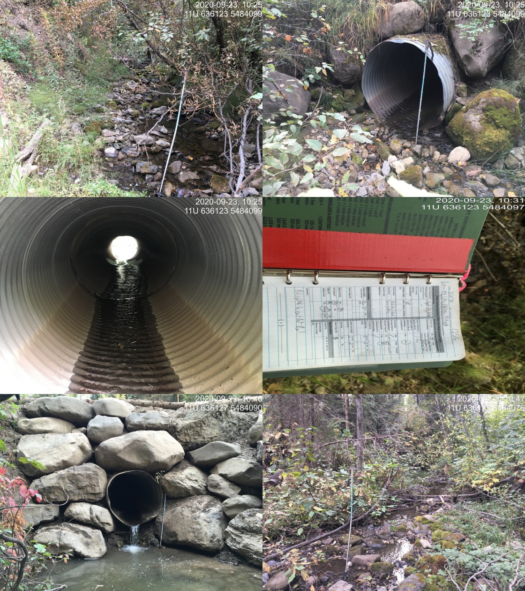

Appendix - Crossing 62516
Island Lake Lodge Road - Tributary to Lizard Creek
Site Location
Crossing 62516 is located on a tributary to Lizard Creek, approximately 630m upstream from the confluence with Lizard Creek. This culvert has also been recorded in PSCIS as crossing 50153. The stream has been diverted from its historic channel and runs adjacent to a historic road to Lizard Creek approximately 500 downstream of the location of the confluence in the freshwater atlas. Island Lake Lodge Road is an extension of Mt.Fernie Park Road which is accessed from Highway 3 within Fernie city limits. The Mt.Fernie Provincial Park is a popular recreational destination for hikers, sightseers and mountain bikers. Island Lake Lodge is located at 1400m of elevation near Island Lake and is a year round tourist destination providing accommodations, guided hiking and backcountry catskiing.
Background
At the crossing location, the stream had good flow and is located within an area of old growth cedar adjacent to a recreation trail. At the time of the survey the stream was the highest volume tributary to Lizard Creek located on the east side of the valley. No fisheries information was available for the stream (MoE 2020d). Downstream however, Lizard Creek supports westslope cutthroat trout, bull trout, mountain whitefish, brook trout, longnose sucker and longnose dace (MoE 2020b).
PSCIS stream crossing 62516 was ranked as a high priority for follow up with habitat confirmation due to the relatively large size of the stream recorded in PSCIS (channel width = 3.5m) relative to other tributary streams in the Lizard Creek watershed and because it was rated as containing high value habitat by VAST Resource Solutions Inc. (2013) and Grainger (2011). There is a bridge (PSCIS 197566) located on the Lazy Lizard recreation trail approximatley 350m upstream of the crossing and an unassessed modelled crossing (modelled ID 4600929) approximately 950m upstream. Downstream approximately 400m there is a foot bridge (PSCIS 197544) on a recreational hiking/biking trail. The habitat confirmation was completed on September 23, 2020. A map of the watershed including areas surveyed is provided in Attachment 1 – Map 082G.113.
Stream Characteristics at Crossing
Th culvert located at PSCIS 62516 appeared to have been replaced in 2020 with fresh rock and road fill present. At the time of the survey, the un-embedded and non-backwatered 1.2m diameter crossing was considered a barrier to upstream fish passage with a pipe length of 11m, a culvert slope of 5%, a stream width ratio of 2.1 and an outlet drop of 0.49m (Table 5.20). Water temperature was 9\(^\circ\)C, pH was 7.9 and conductivity was 333uS/cm.
Stream Characteristics Downstream
The stream was surveyed downstream from the culvert for 630m to Lizard Creek. Overall, total cover amount was rated as moderate with deep pools dominant. Cover was also present as small woody debris, large woody debris, undercut banks, and overhanging vegetation (Table 5.21, Figure 5.19). The average channel width was 2.5m, the average wetted width was 1.4m and the average gradient was 2.7%. The dominant substrate was gravels with cobbles subdominant. Adjacent to the historic road, on the right bank of stream, there was very limited shrub and tree riparian vegetation. Downstream of the crossing there were frequent sections of gravels suitable for salmonid spawning and no barriers or obstacles to fish passage. Habitat was rated as high value for fry/juvenile salmonid rearing.
Stream Characteristics Upstream
The stream was surveyed upstream from the culvert for 730m. Overall, total cover amount was rated as moderate with undercut banks dominant. Cover was also present as small woody debris, large woody debris, deep pools, and overhanging vegetation (Table 5.21, Figure 5.19). The average channel width was 2m, the average wetted width was 1.3m and the average gradient was 7.6%. There were abundant gravels suitable for resident westslope cutthrout trout spawning throughout (Figure 5.19). Fry were observed within the area surveyed to 540m upstream of the culvert where gradients increased to >20% for a distance of approximately 15m. Although no sampling was conducted, no fish were observed above this high gradient section. Habitat value was rated as high for fry/juvenile salmonid rearing.
Structure Remediation and Cost Estimate
Structure replacement with an open bottomed structure is recommended to provide access to the habitat located upstream of PSCIS crossing 62516. The cost of the work is estimated at $125000 for a cost benefit of $5000/linear m and $6100/m2.
Conclusion
There is 0.5km of mainstem habitat upstream of crossing 62516 with habitat rated as high value for fry and juvenile salmonid rearing. The road may be part of the Island Lake Recreational tenure or solely the responsiblity of the Ministry of Forests, Lands, Natural Resource Operations & Rural Development. The crossing was ranked as a moderate priority for proceeding to design for replacement.
| Location and Stream Data |
|
Crossing Characteristics | – |
|---|---|---|---|
| Date | 2020-09-23 | Crossing Sub Type | Round Culvert |
| PSCIS ID | 62516 | Diameter (m) | 1.2 |
| External ID | NA | Length (m) | 11 |
| Crew | KP, AI | Embedded | No |
| UTM Zone | 11 | Depth Embedded (m) | NA |
| Easting | 636123 | Resemble Channel | No |
| Northing | 5484087 | Backwatered | No |
| Stream | Tributary to Lizard Creek | Percent Backwatered | NA |
| Road | Island Lake Lodge Road | Fill Depth (m) | 1.3 |
| Road Tenure | MoTi recreation | Outlet Drop (m) | 0.49 |
| Channel Width (m) | 2.47 | Outlet Pool Depth (m) | 0.8 |
| Stream Slope (%) | 2.67 | Inlet Drop | No |
| Beaver Activity | No | Slope (%) | 5 |
| Habitat Value | Medium | Valley Fill | Deep Fill |
| Photos:  |
| Location | Length Surveyed (m) | Channel Width (m) | Wetted Width (m) | Pool Depth (m) | Gradient (%) | Total Cover | Habitat Value |
|---|---|---|---|---|---|---|---|
| Upstream | 730 | 2.0 | 1.3 | 0.3 | 7.6 | moderate | high |
| Downstream | 630 | 2.5 | 1.4 | 0.4 | 2.7 | moderate | high |
Figure 5.19: Typical habitat downstream of PSCIS crossing 62516.
Figure 5.20: Typical habitat upstream of PSCIS crossing 62516.
Figure 5.21: Gravels suitable for spawning upstream of PSCIS crossing 62516.